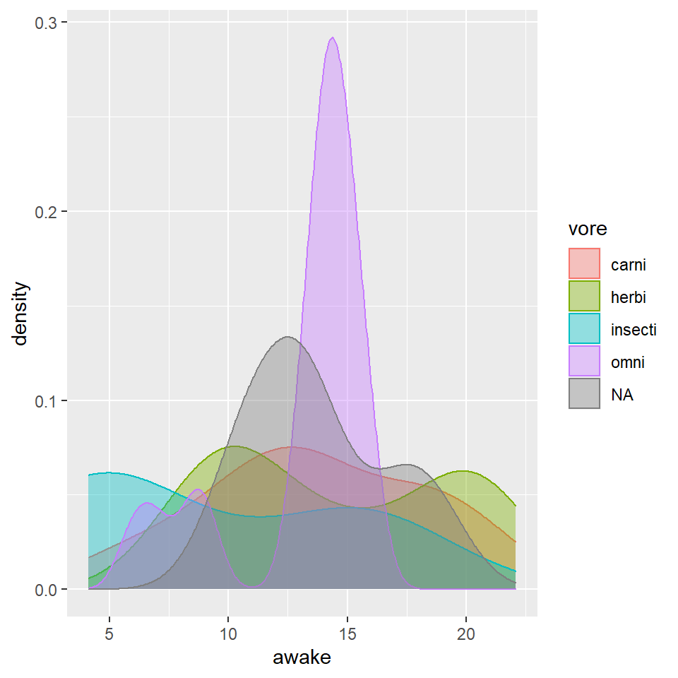
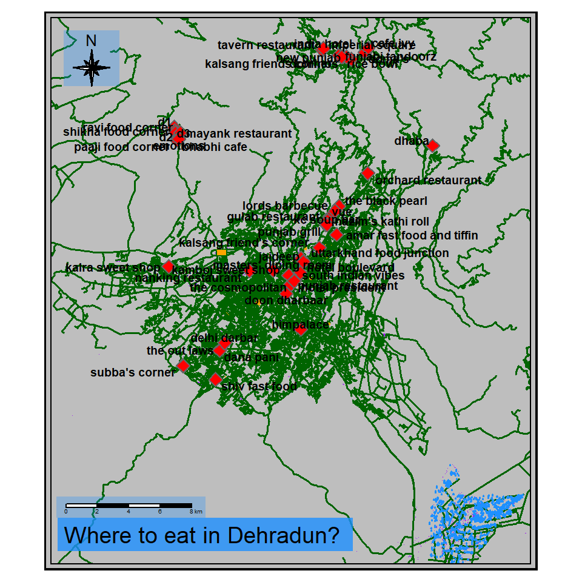

Hi this is Sanjana Gupta. Here are some graphs and maps that show my progress in these two weeks of the workshop. I have had a great character development throughout this tenure. This is the evidence of how I went from a person completely unaware of any coding language, to actually creating stuff through codes.
msleep dataset## [1] "name" "genus" "vore" "order" "conservation"
## [6] "sleep_total" "sleep_rem" "sleep_cycle" "awake" "brainwt"
## [11] "bodywt"## # A tibble: 6 x 11
## name genus vore order conservation sleep_total sleep_rem sleep_cycle awake
## <chr> <chr> <chr> <chr> <chr> <dbl> <dbl> <dbl> <dbl>
## 1 Cheetah Acin~ carni Carn~ lc 12.1 NA NA 11.9
## 2 Owl mo~ Aotus omni Prim~ <NA> 17 1.8 NA 7
## 3 Mounta~ Aplo~ herbi Rode~ nt 14.4 2.4 NA 9.6
## 4 Greate~ Blar~ omni Sori~ lc 14.9 2.3 0.133 9.1
## 5 Cow Bos herbi Arti~ domesticated 4 0.7 0.667 20
## 6 Three-~ Brad~ herbi Pilo~ <NA> 14.4 2.2 0.767 9.6
## # ... with 2 more variables: brainwt <dbl>, bodywt <dbl>## # A tibble: 6 x 11
## name genus vore order conservation sleep_total sleep_rem sleep_cycle awake
## <chr> <chr> <chr> <chr> <chr> <dbl> <dbl> <dbl> <dbl>
## 1 Tenrec Tenr~ omni Afro~ <NA> 15.6 2.3 NA 8.4
## 2 Tree s~ Tupa~ omni Scan~ <NA> 8.9 2.6 0.233 15.1
## 3 Bottle~ Turs~ carni Ceta~ <NA> 5.2 NA NA 18.8
## 4 Genet Gene~ carni Carn~ <NA> 6.3 1.3 NA 17.7
## 5 Arctic~ Vulp~ carni Carn~ <NA> 12.5 NA NA 11.5
## 6 Red fox Vulp~ carni Carn~ <NA> 9.8 2.4 0.35 14.2
## # ... with 2 more variables: brainwt <dbl>, bodywt <dbl>## [1] 83 11## [1] TRUEIn the graph below, I am showing the sleeping patterns of mammals. It is a density graph with ‘density’ on the y-axis and the number of hours a mammal is ‘awake’ on the x-axis. The graph lines are filled with different colors as well. These colors depict four types of diets in mammals ranging between herbivore, carnivore, insectivore, and omnivore. Reading the graph can give us information on how much mammals stay awake for how long, and what is their type of diet.
To carry out this graph, I have created a table for the mammals and their different attributes. From those attributes, I have picked up ‘awake’ and ‘vore’ as two attributes to plot my graph.

## min max
## x 77.88368 78.20368
## y 30.16556 30.48556The map below shows all the restaurants marked in the city of Dehradun. I have marked other features as well (highways, buildings, trees, parks).
Significance of different colors:
* Purple color symbolizes buildings.
* Dark Green color symbolizes highways.
* Orange color symbolizes parks.
* Brown color symbolizes trees.
* The red diamonds symbolize the restaurants along with their names.

## # A tibble: 16 x 7
## id name sex race birthyear role appearanceseason
## <dbl> <chr> <chr> <chr> <dbl> <chr> <dbl>
## 1 1 Shawn Spencer M White 1977 Psychic Detective 1
## 2 2 Suspect1 M White NA Criminal 1
## 3 3 Lucinda Barry F White NA Police Officer 1
## 4 4 Carlton Lassiter M White 1968 SBPD Head Detective 1
## 5 5 Karen Vick F White 1968 SBPD Chief 1
## 6 6 Burton Guster M Black 1977 Pharmaceutical Salesman 1
## 7 7 Juliet Lynn O'Hara F White 1981 SBPD Detective 1
## 8 8 Henry Spencer M White 1958 Retired SBPD Detective 1
## 9 9 Buzz McNab M White 1975 SBPD Junior Detective 1
## 10 10 Woody Strode M White 1954 Coroner 1
## 11 11 Reception Lady F Black NA Police Officer 1
## 12 12 Katarina McCallum F Other NA Heiress 1
## 13 13 Police Artist M White NA Sketch Artist 1
## 14 14 Mr. McCallum M White NA Rich Guy 1
## 15 15 Kingfisher M White NA Patrol Officer 1
## 16 16 Thrift Store Guy M White NA Worker 1## # A tibble: 21 x 5
## from to weightage relationship relationship_changed
## <dbl> <dbl> <dbl> <chr> <chr>
## 1 1 2 1 <NA> <NA>
## 2 1 3 15 Professional Professional
## 3 1 4 20 Competition Close Friend
## 4 1 11 4 <NA> <NA>
## 5 1 9 1 Stranger Friend
## 6 1 6 32 Best Friend Best Friend
## 7 1 12 5 Professional Romantic
## 8 1 13 3 <NA> <NA>
## 9 1 14 4 <NA> <NA>
## 10 1 15 1 <NA> <NA>
## # ... with 11 more rows## # A tbl_graph: 16 nodes and 21 edges
## #
## # An undirected multigraph with 3 components
## #
## # Node Data: 16 x 7 (active)
## id name sex race birthyear role appearanceseason
## <dbl> <chr> <chr> <chr> <dbl> <chr> <dbl>
## 1 1 Shawn Spencer M White 1977 Psychic Detective 1
## 2 2 Suspect1 M White NA Criminal 1
## 3 3 Lucinda Barry F White NA Police Officer 1
## 4 4 Carlton Lassiter M White 1968 SBPD Head Detective 1
## 5 5 Karen Vick F White 1968 SBPD Chief 1
## 6 6 Burton Guster M Black 1977 Pharmaceutical Salesman 1
## # ... with 10 more rows
## #
## # Edge Data: 21 x 5
## from to weightage relationship relationship_changed
## <int> <int> <dbl> <chr> <chr>
## 1 1 2 1 <NA> <NA>
## 2 1 3 15 Professional Professional
## 3 1 4 20 Competition Close Friend
## # ... with 18 more rows## # A tibble: 16 x 7
## id name sex race birthyear role appearanceseason
## <dbl> <chr> <chr> <chr> <dbl> <chr> <dbl>
## 1 1 Shawn Spencer M White 1977 Psychic Detective 1
## 2 2 Suspect1 M White NA Criminal 1
## 3 3 Lucinda Barry F White NA Police Officer 1
## 4 4 Carlton Lassiter M White 1968 SBPD Head Detective 1
## 5 5 Karen Vick F White 1968 SBPD Chief 1
## 6 6 Burton Guster M Black 1977 Pharmaceutical Salesman 1
## 7 7 Juliet Lynn O'Hara F White 1981 SBPD Detective 1
## 8 8 Henry Spencer M White 1958 Retired SBPD Detective 1
## 9 9 Buzz McNab M White 1975 SBPD Junior Detective 1
## 10 10 Woody Strode M White 1954 Coroner 1
## 11 11 Reception Lady F Black NA Police Officer 1
## 12 12 Katarina McCallum F Other NA Heiress 1
## 13 13 Police Artist M White NA Sketch Artist 1
## 14 14 Mr. McCallum M White NA Rich Guy 1
## 15 15 Kingfisher M White NA Patrol Officer 1
## 16 16 Thrift Store Guy M White NA Worker 1## # A tibble: 21 x 5
## from to weightage relationship relationship_changed
## <dbl> <dbl> <dbl> <chr> <chr>
## 1 1 2 1 <NA> <NA>
## 2 1 3 15 Professional Professional
## 3 1 4 20 Competition Close Friend
## 4 1 11 4 <NA> <NA>
## 5 1 9 1 Stranger Friend
## 6 1 6 32 Best Friend Best Friend
## 7 1 12 5 Professional Romantic
## 8 1 13 3 <NA> <NA>
## 9 1 14 4 <NA> <NA>
## 10 1 15 1 <NA> <NA>
## # ... with 11 more rows## # A tibble: 16 x 7
## id label group race birthyear role appearanceseason
## <dbl> <chr> <chr> <chr> <dbl> <chr> <dbl>
## 1 1 Shawn Spencer Male White 1977 Psychic Detective 1
## 2 2 Suspect1 Male White NA Criminal 1
## 3 3 Lucinda Barry Female White NA Police Officer 1
## 4 4 Carlton Lassiter Male White 1968 SBPD Head Detective 1
## 5 5 Karen Vick Female White 1968 SBPD Chief 1
## 6 6 Burton Guster Male Black 1977 Pharmaceutical Salesman 1
## 7 7 Juliet Lynn O'Hara Female White 1981 SBPD Detective 1
## 8 8 Henry Spencer Male White 1958 Retired SBPD Detective 1
## 9 9 Buzz McNab Male White 1975 SBPD Junior Detective 1
## 10 10 Woody Strode Male White 1954 Coroner 1
## 11 11 Reception Lady Female Black NA Police Officer 1
## 12 12 Katarina McCallum Female Other NA Heiress 1
## 13 13 Police Artist Male White NA Sketch Artist 1
## 14 14 Mr. McCallum Male White NA Rich Guy 1
## 15 15 Kingfisher Male White NA Patrol Officer 1
## 16 16 Thrift Store Guy Male White NA Worker 1## # A tibble: 21 x 5
## from to weightage relationship relationship_changed
## <dbl> <dbl> <dbl> <chr> <chr>
## 1 1 2 1 <NA> <NA>
## 2 1 3 15 Professional Professional
## 3 1 4 20 Competition Close Friend
## 4 1 11 4 <NA> <NA>
## 5 1 9 1 Stranger Friend
## 6 1 6 32 Best Friend Best Friend
## 7 1 12 5 Professional Romantic
## 8 1 13 3 <NA> <NA>
## 9 1 14 4 <NA> <NA>
## 10 1 15 1 <NA> <NA>
## # ... with 11 more rowsThis was by far my best graph. I really enjoyed doing it. This was supposed to be based on my favorite TV show. I watched a one hour long episode of ‘Psych’. Watching this show again and again is literally my favorite thing to do. On top of that, I was able to created graphs based on the characters from the show. I recorded data at each moment in the episode and created graphs from that compiled data. This job that was completely mind boggling. I never thought I would be able to analyse data on Psych! It was a lot of fun.
In this graph, I have shown the network and connections between various characters of the show. Shawn being the main character, is the epitome of this network. Other characters connect to him and then there are others who connect to those characters. There are also two characters not involved in this network since they did not play a part in the episode I watched. Nevertheless, they are mentioned because they become major players in the latter episodes.
The graph is colored according to the characters’ genders.
These past two weeks were pretty fun! In the start, I wondered why we were studying this. I asked what advantage it has over other things like Word or PowerPoint? I think I finally have the answer to the question after these two strenuous weeks. It just kept becoming better and better with each passing day. I am surprised to say this but, I might actually use this in the future sometime. This workshop helped me develop a new version of myself who is getting interested in coding. I think there can be nothing better than to discover a new parts of myself through time.